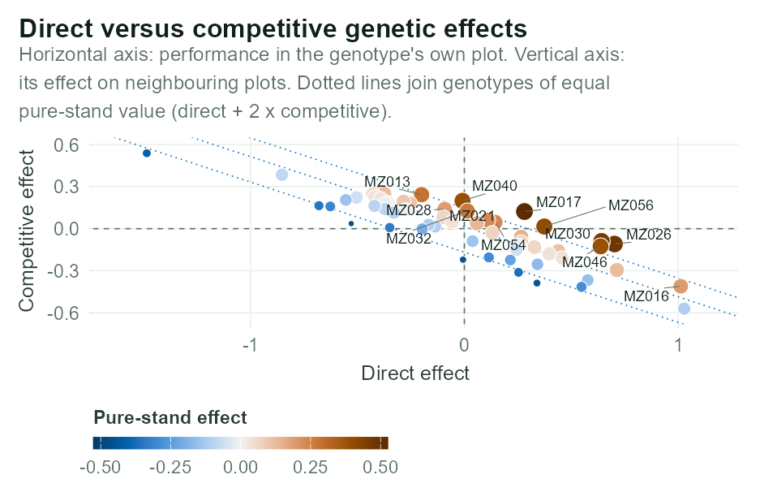
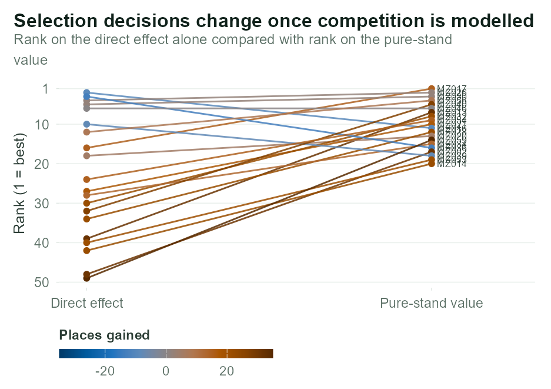
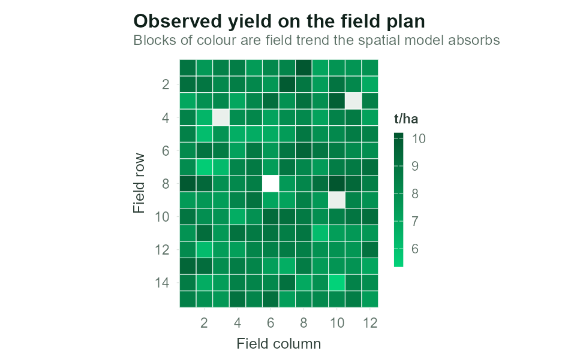

Inter-plot competition analysis for plant breeding trials.
An R package, with a Shiny interface, that fits direct–competition mixed models to unbordered single-row-plot breeding trials, using ASReml-R as its computational engine. It estimates, for every genotype, the effect it expresses in its own plot, the effect it imposes on its neighbours, and the value it would express in a pure stand — in a single trial or across a series of environments.
Documentation: https://tolekeno.github.io/InterPlotComp/
⚠️ ASReml-R licence
ASReml-R is commercial software licensed by VSNi. This application supplies no licence of any kind.
- It uses whatever ASReml-R installation and already-activated licence exist in the R process that runs it.
- It never reads, writes, embeds, stores, transmits or renews a licence key, and it has no fallback engine — without a valid licence, no model can be fitted.
- Install and activate ASReml-R separately, following VSNi’s instructions, in the same R installation you use to launch the app.
- Never commit a licence file or activation key to a shared or public repository, and never bundle one into a container image.
The interface opens and lets you inspect data even when ASReml-R is absent, so that the installation problem is visible immediately rather than after a long upload.
Installation
# install.packages("remotes")
remotes::install_github("tolekeno/InterPlotComp")That pulls in the required packages automatically. The optional ones add interactive plots, higher-quality image export and Excel output; install them too if you want the full interface:
remotes::install_github("tolekeno/InterPlotComp", dependencies = TRUE)install_github() does not build vignettes by default. To get them locally:
remotes::install_github("tolekeno/InterPlotComp", dependencies = TRUE,
build_vignettes = TRUE)They are also on the package website, so building them is optional.
ASReml-R is not installed by any of this. It is commercial software from VSNi, is not on CRAN, and must be installed and licensed separately in the same R installation. Without it the interface still opens and data can be inspected, but no model can be fitted.
R 4.1 or later is required. ASReml-R is obtained from VSNi directly rather than from an R package repository, so it cannot be installed as a dependency.
Running
run_app() reports any optional packages that are missing, then opens the interface in your browser. Useful arguments:
run_app(port = 7900) # fixed port
run_app(launch.browser = FALSE) # print the URL instead of opening a browser
run_app(max_upload_mb = 500) # allow larger fieldbooksRun it in the R installation where ASReml-R is licensed. On a machine with several R versions, using the wrong one is the usual reason the app reports that ASReml-R is missing — the Guide → Session panel shows which R and which library paths are actually in use.
Scripting an analysis
The interface is a front end to an exported API, so an analysis can be scripted and re-run without clicking:
library(InterPlotComp)
trial <- prepare_trial_data(
read.csv("my_trial.csv"),
map = list(yield = "Yield", geno = "Entry", row = "Row",
column = "Column", rep = "Rep", block = "Block")
)
trial <- complete_field_grid(trial) # pad gaps for the spatial model
nb <- add_neighbours(trial, "rows") # competition along field rows
fit <- fit_single_model(
nb$data, nb$names,
opts = list(structure = "us", spatial = TRUE, nugget = TRUE,
auto_simplify = TRUE, exact_se = TRUE, compare_baseline = TRUE,
maxit = 60, workspace = "2gb", cinv_limit = 6000)
)
head(fit$genetic) # direct, competitive and pure-stand values
fit$variance # interpreted variance components
fit$comparison$lrt # does competition matter?Use fit_met_model() for a series of environments, and build_relationship() to supply a pedigree or genomic relationship matrix. sample_single_trial(), sample_met_trial() and sample_pedigree() generate worked examples from known parameters.
Deploying to a server
inst/app/app.R is the entry point for Shiny Server, ShinyProxy or shinyapps.io. The server needs the package installed and a valid ASReml-R licence permitted to run there. Commercial ASReml-R binaries generally cannot be installed automatically by public hosting services, so local execution or an institution-managed server is usually simplest.
The model
For plot i:
y_i = μ + design_i + d_g(i) + Σ_{j ∈ N(i)} c_g(j) + s_i + e_i| Term | Meaning |
|---|---|
d |
Direct effect — how the genotype performs in its own plot |
c |
Competitive effect — how much the genotype raises or lowers a neighbouring plot |
d + k·c |
Pure-stand value — what the genotype expresses when every neighbour is itself (k = number of competing neighbours) |
s |
Separable spatial field trend; the process on each axis is selectable (see below) |
In ASReml-R:
random = ~ Rep + Block + str(~ Geno + N1 + and(N2), ~ us(2):id(nGeno))
residual = ~ ar1(Column):ar1(Row)and() adds N2’s design matrix onto N1’s rather than creating new effects, so both neighbours of a plot draw on one competitive effect vector. equate.levels forces Geno, N1 and N2 to share a single genotype level set, so effect g in the direct block and effect g in the competitive block are the same genotype. us(2) then estimates Var(d), Var(c) and Cov(d, c) directly.
Choosing the residual process
The residual is separable: one correlation process along field rows and another along field columns, each chosen independently from AR1 (default), AR2, SAR, SAR2 or independent.
AR1 is right for a smooth fertility gradient. It is not always right on the axis along which plots compete. Interference leaves a signature in the residuals there: a plot that gives up yield to its neighbour is negatively correlated with it at lag 1, while lag 2 is positive. AR1 imposes a geometric decay of a single sign and cannot represent that, so whatever it misses is absorbed into the competitive effects — the very quantity being estimated. AR2 estimates two free correlations and can; SAR2 is its symmetric-autoregressive counterpart, often better behaved on a short field axis.
residual = ~ ar1(Column):ar2(Row) # single trial
residual = ~ dsum(~ ar1(Column):ar2(Row) | Env) # METFit both and compare AIC. A clear drop means the second-order process earns its extra parameter; a rise means AR1 was adequate. If a second-order process cannot be estimated, the simplification ladder falls back to AR1 × AR1 before giving up anything else, and reports it.
Border plots legitimately have fewer neighbours. Their absent neighbour factors stay NA and are absorbed by na.method(x = "include") as a zero row in the design matrix — they contribute no competitive effect rather than being dropped.
Multi-environment model
fixed = Yield ~ Env
random = ~ Rep + Block + str(~ Env:Geno + Env:N1 + and(Env:N2),
~ facv(EffectEnv, r):id(nGeno))
residual = ~ dsum(~ ar1(Column):ar1(Row) | Env)The 2·E direct and competitive environment effects share one joint covariance matrix. dsum() gives each environment its own spatial section, so trials may differ in size. True Env:Geno interaction terms are used rather than a pre-combined factor, because a pre-combined factor drops the unobserved cells of a sparse genotype × environment table and then no longer conforms with its variance structure.
Three structures are offered:
| Structure | Parameters | Assumption |
|---|---|---|
| Joint factor-analytic | 2E(r+1) | Direct and competitive effects may have different G×E patterns. Most general. |
| Separable us(2) × FA | 3 + E(r+1) | One shared environment correlation pattern. Fits where the joint model is singular. |
| Separate fa() per effect | 2E(r+1) | An ordinary fa() term for each effect. The direct–competition covariance becomes a structural zero. |
| Diagonal | 2E | No between-environment correlation. The null model for G×E. |
fa()versusfacv(). They fit the same covariance, ΛΛ′ + Ψ;fa()additionally materialises the latent factor scores. Butfa()cannot go inside the jointstr()block: it augments the term with its own latent-factor levels, so ASReml reportsSize of direct product (468) does not conform with total size of included terms (416)— the gap being rank × nGeno. Fittingfa()therefore requires giving up the joint structure, which is what the Separate fa() per effect option does.That has a real cost. On the worked example the joint model fits 10.2 log-likelihood units better for the same 30 parameters, and the direct–competition correlations it estimates are −0.96, −0.18, −0.47 and −0.88. Forcing them to zero inflates the pure-stand variance by 1.3× to 8.7× depending on the environment, because the
2k·Cov(D, C)term is dropped. The joint structure remains the default for that reason; the application states the limitation whenever the separate-fa()structure is in use.
Pure-stand covariance across environments:
G_pure = G_direct + k² G_competition + k (G_dc + G_dc')Pedigree and genomic relationships
By default genotypes are treated as unrelated. Supplying a relationship matrix replaces that assumption with the known covariance between relatives, which helps the competitive effect most — it is the harder of the two to estimate and borrows the most information from family.
| Source | Input | Built with |
|---|---|---|
| Pedigree | individual, male parent, female parent | asreml::ainverse() |
| Relationship / kinship matrix | square matrix, first column = identifiers | supplied directly |
| Marker matrix | genotypes × markers, coded 0/1/2 or −1/0/1 | VanRaden genomic relationship |
The model becomes
random = ~ Rep + Block +
str(~ vm(Geno, K) + vm(N1, K) + and(vm(N2, K)), ~ us(2):vm(Geno, K))A quiet wrong-answer trap. Writing the variance formula as
~ us(2):id(n)while the model formula usesvm()is accepted by ASReml, converges happily, and silently returns the independent-genotype answer — thestr()variance formula overrides the relationship.vm()must appear on both sides. This application never builds theid()form when a relationship matrix is in use.ASReml also resolves the second argument of
vm()from the calling frame, not from the formula’s environment, so the object is held as an ordinary local named.kinshipin the function that callsasreml().
What changes in the output:
- The direct variance becomes an additive genetic variance, so the reported heritability is narrow-sense rather than entry-mean.
- Individuals in the relationship matrix with no plot in the trial — parents, for instance — still receive predicted effects from their relatives, flagged Relative only. This is how you get parental breeding values out of a progeny trial.
- Every genotype with an observed plot must appear in the relationship matrix; the application refuses to fit rather than quietly dropping the rest.
A genomic relationship matrix is singular whenever there are fewer markers than genotypes, or duplicated lines, so a small ridge is blended toward the identity before inversion. The blending weight is adjustable.
For the MET workspace the same substitution applies, with the genotype dimension of the joint covariance becoming vm(Geno, K).
Adjusting for a covariate
Interference has a physical cause. Where that cause has been measured — plant height, canopy width, root vigour — the model can use the measurement directly instead of inferring the whole effect from yield alone.
Name the column and the trait is centred, the neighbouring plots’ values summed over the same neighbours that supply the competitive genetic effects, and fitted as a fixed covariate:
fixed = Yield ~ 1 + Covariate_nb # single trial
fixed = Yield ~ Env + Covariate_nb # METThe default is a single-trait model with no adjustment. The focal plot’s own value can be added too, but is off by default: it absorbs genetic variation in the covariate and so removes part of the direct effect being estimated.
On the worked example, where plant height is generated from the same competitive effects that drive the interference, the neighbour slope is −0.016 t/ha per cm (z = −13.1) and the competitive genetic variance falls from 0.073 to 0.010 — the covariate was carrying most of the competition.
A Wald test accompanies the covariate: a conditional F-test of each fixed term with computed denominator degrees of freedom, reported with a plain Retain column. On the worked example the height covariate gives p < 2e-16 (retain); a covariate of pure noise gives p = 0.46 and Retain = No, returning the model to a single-trait analysis.
Do not compare log-likelihood, AIC or BIC between a run with the covariate and one without. Adding a covariate changes the fixed model, and REML likelihoods are comparable only when the fixed effects are identical. Compare the variance components and the direct–competition correlation instead. The likelihood-ratio test is unaffected — it compares two models sharing whatever fixed effects are in force.
What the application produces
Genetic values — direct, competitive and pure-stand effects per genotype, ranked on predicted pure-stand performance. When a relationship matrix is supplied, evaluated genotypes and relatives predicted from the matrix are reported in separate tables, because the second group has no plots of its own. Also (per genotype × environment for a MET), with exact standard errors, reliabilities, predicted pure-stand yield, and rank change between the direct and pure-stand orderings.
Variance components — direct, competitive, their covariance and correlation, pure-stand variance, spatial and nugget variances, each with its share of the total and a boundary flag; plus a heritability table giving Cullis generalised heritability, accuracy and how many genotypes clear a reliability of 0.5, for both the direct and the pure-stand value.
Model comparison — the same model refitted without competitive effects, with AIC, BIC and a likelihood-ratio test, so the question does competition actually matter here? is answered rather than assumed.
Figures — direct-vs-competitive scatter with pure-stand contours, ranking with exact confidence intervals, rank-change slope chart, variance-component shares, field plans, residual diagnostics, sample variogram, and for a MET: genetic-correlation heatmaps, environment variances, stability across environments and factor-analytic fit.
Colour — the three effect series, the sequential ramp and the diverging ramp are not chosen by eye. They are stepped in OKLab and checked against a lightness band, a chroma floor, a colour-vision-deficiency separation target after Machado-Oliveira-Fernandes (2009) protan and deutan simulation, a normal-vision floor and a contrast floor, so a figure is legible in print, in greyscale and to a reader with colour-vision deficiency. Diverging scales are centred on zero, so the neutral step always means no effect rather than the middle of this dataset.
Interface — one design system drives the Bootstrap theme, the stylesheet and the figures. Typography is a 15 px base on a 1.20 scale using the platform UI face, so nothing is downloaded at run time and the application works on an offline analysis machine. A dark mode is available from the navigation bar; it is a second validated palette rather than an automatic inversion, and figures keep their light ground in both modes so the preview matches the exported file. The layout is responsive down to phone width.
Exports — every figure downloads as PNG, PDF, TIFF (LZW), SVG or EPS at a chosen canvas size and resolution, defaulting to 600 dpi at journal column widths. Every table downloads as CSV or Excel, and the whole analysis downloads as one workbook plus one multi-page vector PDF.
Input data
One row per physical plot:
| Column | Required | Notes |
|---|---|---|
| Response | yes | Plot yield or another continuous trait |
| Genotype | yes | Entry identifier |
| Field row | yes | Physical field coordinate, not a spreadsheet line number |
| Field column | yes | Physical field coordinate |
| Environment | MET only | Site/year identifier |
| Replicate | no | |
| Block | no | Nested within replicate (and environment) automatically |
| Covariate | no | A measured proxy for interference — plant height, canopy width, root vigour |
A pedigree, kinship matrix or marker file is supplied separately, in the Genetic relationship section of the sidebar. A worked example pedigree matching both example trials can be downloaded there.
Rules:
- Each Environment–Row–Column combination must identify exactly one plot.
- A file holding several sites can be analysed one site at a time in the single-trial workspace: name the site column under Column mapping and pick the site. The same fieldbook then serves both workspaces without being split.
-
Keep failed plots. Leave the genotype and set the response to blank/
NA— the plot still competes with its neighbours, so deleting the row loses real information. - Leave gaps as gaps. Positions absent from the field (alleys, paths) are padded internally with a missing response so the spatial grid stays rectangular. They carry no genotype and no competitive effect.
- Field axes labelled with integers are expanded to their full span, so an entirely absent field row still occupies a level. Without this, AR1 would treat the plots either side of it as physically adjacent.
Both workspaces offer a worked example simulated from known parameters (listed in the Guide), so you can confirm the model recovers them before trusting it on your own data.
Interpreting the output
- Direct–competition correlation is usually negative: genotypes that yield well in their own plot do so partly at their neighbours’ expense. A strongly negative value is the clearest evidence that plot yield overstates genetic merit.
- Pure-stand genetic variance is often much smaller than the direct variance, because the two effects partly cancel. It is the variance that genuine genetic gain can act on.
- Reliability (1 − PEV/σ²_g) above roughly 0.5 means the prediction is dependable enough to select on.
- Rank change identifies the genotypes that would have been mis-selected on plot yield alone. This is the practical payoff of the model.
- MET genetic correlations: high positive values mean environments can be treated as one selection environment; low or negative values indicate crossover interaction. Use the pure-stand correlations for monoculture and on-farm recommendations.
When not to trust the result
The data panel warns automatically about most of these:
- Each genotype borders only one or two distinct neighbour genotypes — direct and competitive effects are then poorly separated.
- Most plots are on a border, so few records carry a complete neighbour set.
- Fewer than about 15 genotypes contribute observations.
- The direct–competition correlation is pinned at ±1, or a variance sits at a boundary (flagged in the variance table). Boundary components have invalid standard errors.
- The residual field plan still shows large patches of one colour — spatial trend the model has not absorbed may have gone into the competitive effects.
- The application had to fall back to a simpler model. Every fallback is reported; read the fitting log before quoting estimates.
Convergence
ASReml stops at its iteration limit whether or not the variance parameters have settled, and a model reported as not converged is not safe to quote. The application restarts the fit from the current estimates and keeps going until ASReml reports convergence, reporting how many further rounds were needed. The iteration limit in the sidebar sets the length of each round, not a cap on the whole fit. A round limit remains so a genuinely non-convergent model cannot run forever; reaching it is reported rather than hidden.
Starting the worked example from a deliberately crippled maxit = 4, the fit converges after 2 further rounds and reproduces the generous-maxit answer to within 1.4e-4 on every variance component.
Robustness: the simplification ladder
Competition models are prone to singular Average Information matrices. Rather than failing, or silently using ai.sing = TRUE, the application steps down an ordered ladder of nested models, giving up the least defensible assumption first, and reports exactly which model was fitted and why.
Single trial: us(2) → corgh(2) → drop nugget → drop the direct–competition covariance → reduce design terms → drop the spatial residual.
MET: reduce FA rank → drop nugget → separable covariance → diagonal covariance → reduce design terms → independent residuals.
Only recoverable numerical failures advance the ladder; a genuine data or syntax error aborts immediately with its own message.
Source layout
DESCRIPTION package metadata and dependencies
NAMESPACE generated by roxygen2
app.R development entry point (shiny::runApp from a checkout)
inst/app/app.R deployment entry point (Shiny Server / shinyapps.io)
man/ generated help pages
R/00-package.R package-level documentation
R/00-packages.R required vs optional dependencies
R/01-utils.R shared helpers
R/02-theme.R Bootstrap 5 theme, palette, ggplot theme
R/03-data-prep.R validation, field indexing, grid padding, neighbours
R/04-simulate.R worked example data
R/04b-relationship.R pedigree / genomic relationship matrices
R/05-model-core.R ASReml interface, variance extraction, exact PEVs
R/06-model-single.R single-trial model
R/07-model-met.R multi-environment model
R/08-plots.R publication-quality figures
R/09-download.R high-resolution figure and table export
R/10-ui-components.R reusable interface pieces
R/10b-mod-relationship.R relationship-matrix input module
R/11-mod-single.R single-trial workspace
R/12-mod-met.R multi-environment workspace
R/13-mod-guide.R guide and about
R/14-run-app.R app_ui(), app_server(), run_app()
tests/testthat/ unit and end-to-end tests
vignettes/ long-form documentation
.github/workflows/ R CMD check, pkgdown, coverage
_pkgdown.yml package website configurationDocumentation
Five vignettes cover the package end to end:
vignette("InterPlotComp", package = "InterPlotComp") # installation and setup
vignette("basic-workflow", package = "InterPlotComp")
vignette("advanced-workflow", package = "InterPlotComp") # relationships, covariates, MET
vignette("example-analyses", package = "InterPlotComp")
vignette("interpreting-output", package = "InterPlotComp") # and when not to trust itThey are also on the package website.
What it looks like
Every figure below is real output from the packaged worked example, produced by the code shown beside it.
The central figure of a competition analysis. Each genotype is placed by what it expresses in its own plot against what it does to its neighbours. The downward slope is the finding that matters: the highest-yielding entries are the ones suppressing the plots they are compared against.
plot_direct_vs_competition(fit$genetic, k = fit$k)
Does it change who you select?
plot_rank_change(fit$genetic, top_n = 20)
The field plan, the single most useful diagnostic for a spatially analysed trial — a fertility gradient, a headland effect or a mis-entered coordinate is visible immediately.
plot_field_map(field, "Observed", title = "Observed yield on the field plan")
The Shiny interface presents all of this across three workspaces — Single trial, Multi-environment and Guide — with every table and figure exportable:
InterPlotComp::run_app()Testing
devtools::test()168 tests, 541 expectations, about 40 seconds.
The suite runs without ASReml-R: every test that fits a model skips cleanly when the engine is absent or unlicensed, so the package is contributable without a commercial licence. With a licence available, the end-to-end tests additionally check that the fitted model recovers the parameters the worked examples were simulated from.
Line coverage is 69% overall and 88-94% across the data-preparation, figure and model-fitting files. The balance is the Shiny server modules, which need a driven browser session rather than unit tests.
Contributing
Bug reports and pull requests are welcome — see CONTRIBUTING.md. Please note that this project is released with a Contributor Code of Conduct; by participating you agree to abide by its terms.
Never commit an ASReml licence file or activation key.
References
- Besag J. & Kempton R. (1986) Statistical analysis of field experiments using neighbouring plots. Biometrics 42:231–251.
- Stringer J.K., Cullis B.R. & Thompson R. (2011) Improved analysis of trials with competition. JABES 16:269–281.
- Hunt C.H., Smith A.B., Jordan D.R. & Cullis B.R. (2013) Predicting additive and non-additive genetic effects from trials where traits are affected by interplot competition. JABES 18:53–63. doi:10.1007/s13253-012-0117-7
- Gilmour A.R., Cullis B.R. & Verbyla A.P. (1997) Accounting for natural and extraneous variation in the analysis of field experiments. JABES 2:269–293.
- Smith A., Cullis B.R. & Thompson R. (2001) Analyzing variety by environment data using multiplicative mixed models. Biometrics 57:1138–1147.
- Cullis B.R., Smith A.B. & Coombes N.E. (2006) On the design of early generation variety trials with correlated data. JABES 11:381–393.
- VanRaden P.M. (2008) Efficient methods to compute genomic predictions. Journal of Dairy Science 91:4414–4423.
- Keno T., Mace E., Godwin I., Jordan D. & Kelly A. (2026) Inter-plot competition in hybrid maize multi-environment yield trials in Ethiopia can reduce rate of genetic gain. Theoretical and Applied Genetics 139:174. doi:10.1007/s00122-026-05255-0